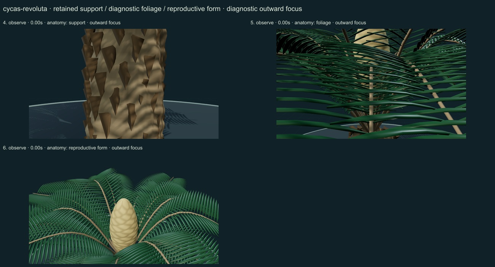
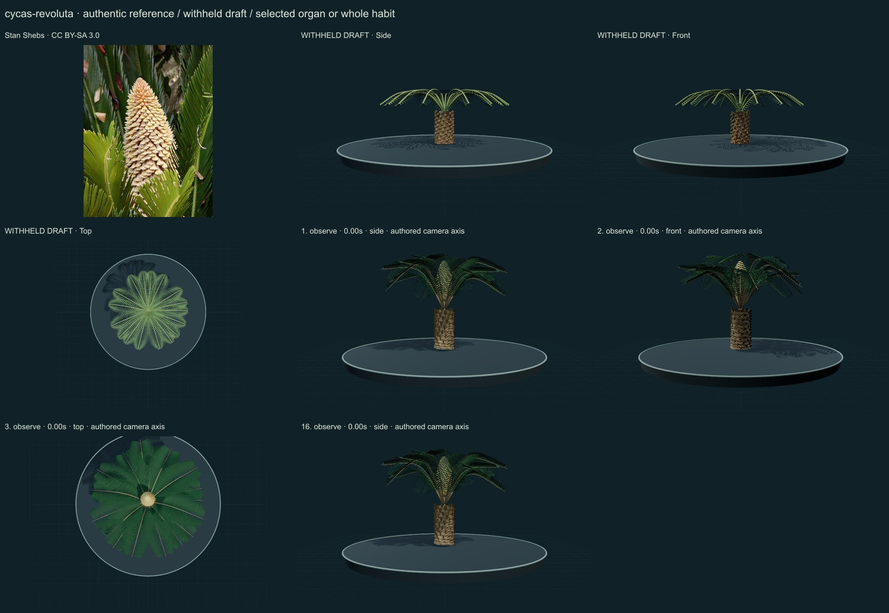
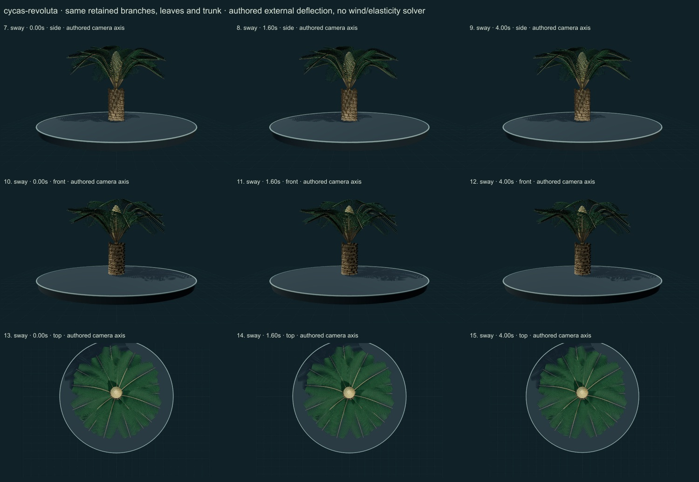

PhenoVoxel Archive · v0.6.24 · October 25, 2026
Sago cycad
285 records after verified publication. 15 saved drafts remain held; 265 remain to 550, including 250 without a saved draft. Release register.
Selected actual university living-plant account through search read: short trunk, arching pinnate fronds, separate-sex plants; female leafy megasporophyll head differs from compact male pollen cone. No palm/flower representation. Selected Flora of China species diagnosis through web retrieval; adult leaf, shoot and reproductive descriptions inform selected morphology, not numerical dynamics. Direct local HTML failed; no local full-text reading claimed.
Stan Shebs · CC BY-SA 3.0. Stan Shebs, July 2001: male pollen cone with surrounding foliage. The reconstruction includes a selected male cone and vegetative habit, with unmeasured proportions; it is not a scanned reconstruction of this individual or the different female reproductive form. Resized inside 1000 px, flattened and JPEG encoded; no generative alteration.
Exact creator, license, source/download/local checksums and access scopes remain in the data. Additional copyrighted institutional photographs and primary figures were consulted privately and linked, not redistributed or sampled into materials.
A selected pollen-bearing male cycad has a short rough caudex with old leaf-base cues, a crown of arching pinnate fronds, narrow stiff spine-tipped leaflets with rolled-margin cues and an upright elongated pale pollen-cone study.
Original numerical connected woody/green axes, individual curved leaf surfaces, subdued pigment variation and selected reproductive surfaces. No source photograph pixels or measured tissue optical parameters.
Remaining: The male form does not represent the different female leafy megasporophyll structure. Old leaf bases remain angular, leaflets too regular, and cone sporophyll details much smoother than the authentic photograph. Revolute margins, stomata, petiole spines, scale/hair microstructure and optics are partial/unmeasured. No fertilization, full development or validated wind mechanics.
Same retained woody axes, rachises, leaves and reproductive surfaces during small authored external deflection. Root/support position and scale remain anchored. Timing and angles are qualitative; there is no wind/elasticity solver, physiological simulation or measured biomechanics. Complete germination, organ emergence and seed-to-adult development are unavailable; no resizing of a ready mature plant.
Partly stylized original educational reconstructions. Fine morphology, age variation, tissue optics, dimensions and environmental mechanics remain incomplete or unmeasured. No independent specialist validation, scientific certification or accuracy percentage. Software checks and screenshots do not establish biological validity.
16 actual nonblank final viewer states inspected on 3 labelled sheets. Side/front/top are authored whole-habit or selected-organ camera axes; outward focus is a separate diagnostic view. Qualitative author review, not independent scientific certification.



Partly stylized original educational reconstructions. Fine morphology, age variation, tissue optics, dimensions and environmental mechanics remain incomplete or unmeasured. No independent specialist validation, scientific certification or accuracy percentage. Software checks and screenshots do not establish biological validity. Prior 274 species objects and original wolf/tiger meshes unchanged. Occurrences and cultivated accessions are not native-range boundaries. Legacy Protista/Monera are reporting conveniences.
Exact findings, sources and screenshot hashes